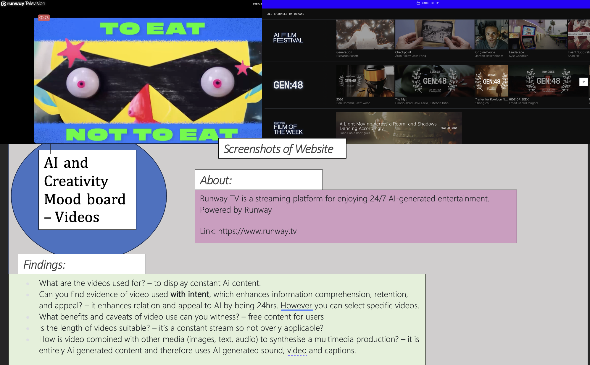

AI tools and their impact on creative media projects - MAD WEEK 9
MAD(A) Week 9 and 10 page - Video Multimedia/ Accesibility
Edited Video:
will Autoplay When page is loaded
User can pause, play and make video full screen, however audio for this has been removed, therefore audio levels can not be changed or muted
Updated Moodboard for Video Usuage:
Week 10 Accesibility
Other forms of accessibility:
- Text Transcripts for Audio/Video: Provide text transcripts for all audio and video elements.
- Keyboard Functionality: Ensure all functionality is accessible via keyboard navigation.
- Mouse and Other Inputs: Make it easy to use inputs other than the keyboard (e.g., mouse).
- Descriptive Links: Make links descriptive for visually impaired users.
- Avoid Seizure-Inducing Content: Do not include content that causes seizures or physical reactions eg flasing lights or features.
- Accessible Colour Palette: Use an accessible colour palette or provide options to change colours for people with visual impairments or color blindness.
- Labels and Instructions: Provide clear labels and instructions for each form box or interactive element.